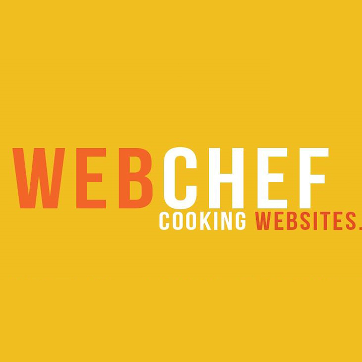
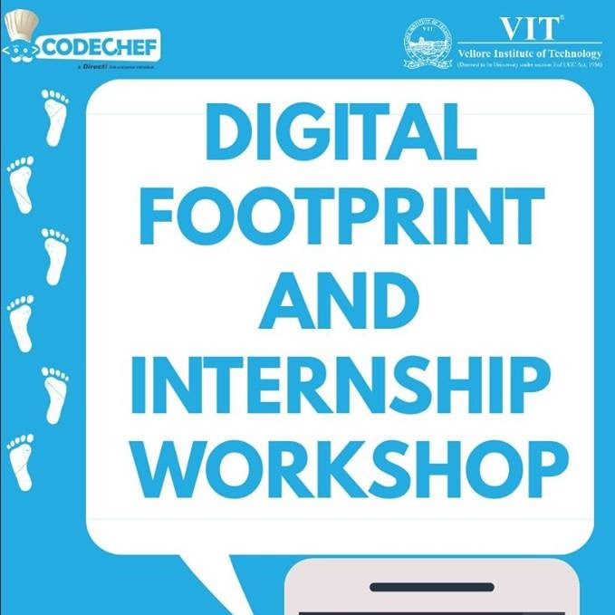
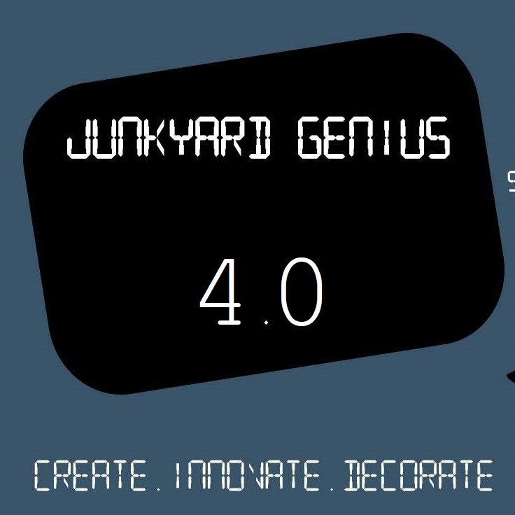
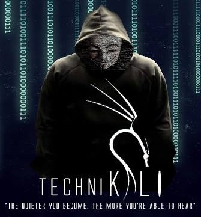

-

January-April 2016
WebChef
CodeChef-VIT organised a series of web development workshops and aimed at making students proficient in this field throughout the Winter Semester. Concepts of HTML,CSS, Javascript and Bootstrap were covered during this workshop spree. A grand event WebX marked a perfect climax of these sessions.
August 2016
Digital Footprint -Brand Yourself
The event helped students make a positive impact on social media. They were tutored about the various existing social media platforms, their usage and how to leave an affirmative trail on the Internet. Professionalism was encouraged by introducing sites like LinkedIn, Github and Pinterest.

September 2016
Cook Off 2.0
Making this the flagship event of the chapter, we conducted 6 long hours of competitive coding where participants were to solve 9 coding questions in any language. The event was conducted on the Official CodeChef server. It turned out to be a huge success as over 100 coding enthusiasts participated.
September 2016
Junkyard Genius 4.0
The participants were given a chance to showcase their talent by creating something out of the materials given to them. The participants were judged on the basis of time taken , teamwork, creativity, and working model.
October 2016
TechniKali
It was a hands- on workshop teaching students about the usage of KaliLinux tool. This tool is the best one when it comes to security and penetration. Thus, basics of Nmap, WireShark etc were covered in this two hour long workshop which had total participation strength of 60.